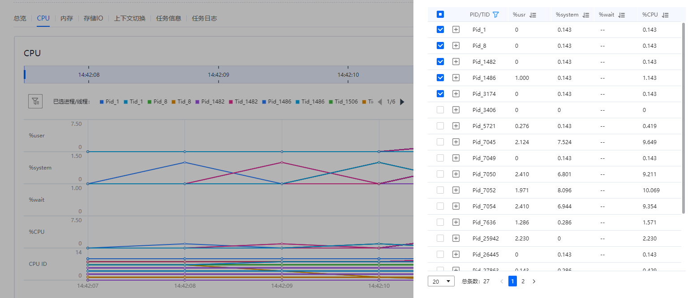
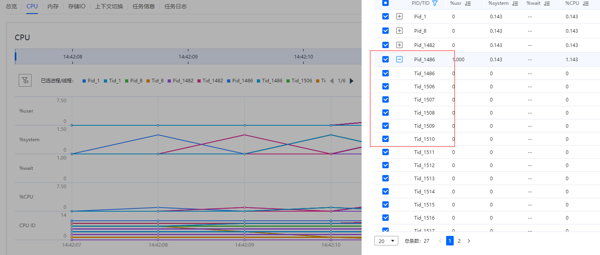

前提条件
已创建进程/线程性能分析任务，并且成功完成分析。
操作步骤
- 在“工程管理”区域，依次单击指定工程和分析任务名称前的
 。
。展开节点列表。
- 单击节点名称查看分析结果。
- 单击节点名称默认进入“总览 ”页签，如图1所示，界面参数描述如下列表格所示。

- 检测到可优化的指标项时显示“优化建议”区域，展开可查看详细的优化建议和修改方法，针对部分配置项给出优化建议，用
 标识，鼠标悬停可查看详细信息。
标识，鼠标悬停可查看详细信息。 - 新建进程/线程性能分析任务时，分析对象选择“应用”，打开“跟踪系统调用”，查看分析结果时会显示系统调用区域说明，参数说明如表5。
表1 CPU区域参数说明 参数
说明
PID/TID
显示进程ID/线程ID。
%user
任务在用户空间占用CPU的百分比。
%system
任务在内核空间占用CPU的百分比。
%wait
任务在IO等待占用CPU的百分比。
%CPU
任务占用CPU的百分比。
Command
当前任务对应的命令名称。
表2 内存区域参数说明 参数
说明
PID/TID
显示进程ID/线程ID。
minflt/s
每秒次缺页错误次数，即虚拟内存地址映射成物理内存地址产生的缺页次数，不需要从硬盘中加载页。
majflt/s
每秒主缺页错误次数，当虚拟内存地址映射成物理内存地址时，相应的页在交换内存中，这样的缺页为主缺页（Major Page Faults），一般在内存使用紧张时产生，需要从硬盘中加载页。
VSZ
任务使用的虚拟内存大小（以KB为单位）。
RSS
常驻内存集（Resident Set Size），表示该任务使用的物理内存大小（以KB为单位）。
%MEM
任务占用内存的百分比。
Command
当前任务对应的命令名称。
表3 存储IO区域参数说明 参数
说明
PID/TID
显示进程ID/线程ID。
kB_rd/s
任务每秒从硬盘读取的数据量（以KB为单位）。
kB_wr/s
任务每秒向硬盘写入的数据量（以KB为单位）。
iodelay
I/O的延迟（单位是时钟周期），包括等待同步块I/O和换入块I/O结束的时间。
Command
当前任务对应的命令名称。
- 检测到可优化的指标项时显示“优化建议”区域，展开可查看详细的优化建议和修改方法，针对部分配置项给出优化建议，用
- 单击“CPU”页签查看进程/线程的CPU分析结果折线图，如图2所示，界面参数描述如表6所示。
- “CPU”页签以折线图方式展示各个CPU性能指标在整个采集过程中的时序数据。
- 默认显示全部进程/线程的分析结果折线图，鼠标悬停于进程/线程上会显示详细参数信息，可以通过点击对应进程/线程来确定是否显示在当前试图中，进程/线程过多会自动折叠分页。
- 如果线条重合，可单击进程/线程对应的颜色图标进行筛选，鼠标悬停于PID/TID标记上会显示详细参数信息。
- 点击
 可进入进程筛选页面。默认按照user属性排序，默认选中前五个进程/线程，筛选框中可以通过点击对应进程查看当前进程下的线程。
可进入进程筛选页面。默认按照user属性排序，默认选中前五个进程/线程，筛选框中可以通过点击对应进程查看当前进程下的线程。
图3 CPU筛选侧滑框
图4 CPU筛选框进程/线程详情
 - 单击“内存”页签查看进程/线程的内存分析结果折线图，如图5所示，界面参数描述如表2所示。
- “内存”页签以折线图方式展示各个内存性能指标在整个采集过程中的时序数据。
- 默认显示全部进程/线程的分析结果折线图，鼠标悬停于进程/线程上会显示详细参数信息，可以通过点击对应进程/线程来确定是否显示在当前试图中，进程/线程过多会自动折叠。
- 可点击进入筛选侧滑框中选择不同的进程/线程查看对应的分析结果折线图，默认按照minflt/s属性降序排列，默认选中前五个进程/线程，筛选框中可以通过点击对应进程查看当前进程下的线程。
- 如果线条重合，可单击进程/线程对应的颜色图标进行筛选，鼠标悬停于PID/TID标记上会显示详细参数信息。
- 单击“存储IO”页签查看进程/线程的存储IO分析结果折线图，如图6所示，界面参数描述如表3所示。
- “存储IO”页签以折线图方式展示各个存储IO性能指标在整个采集过程中的时序数据。
- 默认显示全部进程/线程的分析结果折线图，鼠标悬停于进程/线程上会显示详细参数信息，可以通过点击对应进程/线程来确定是否显示在当前试图中，进程/线程过多会自动折叠。
- 可点击
 进入筛选侧滑框中选择不同的进程/线程查看对应的分析结果折线图，默认按照kB_rd/s属性降序排列，默认选中前五个进程/线程，筛选框中可以通过点击对应进程查看当前进程下的线程。
进入筛选侧滑框中选择不同的进程/线程查看对应的分析结果折线图，默认按照kB_rd/s属性降序排列，默认选中前五个进程/线程，筛选框中可以通过点击对应进程查看当前进程下的线程。 - 如果线条重合，可单击进程/线程对应的颜色图标进行筛选，鼠标悬停于PID/TID标记上会显示详细参数信息。
- 单击“上下文切换”页签查看进程/线程的上下文切换分析结果折线图，如图7所示，界面参数描述如表4所示。
- “上下文切换”页签以折线图方式展示各个上下文切换性能指标在整个采集过程中的时序数据。
- 默认显示全部进程/线程的分析结果折线图，鼠标悬停于进程/线程上会显示详细参数信息，可以通过点击对应进程/线程来确定是否显示在当前试图中，进程/线程过多会自动折叠。
- 可点击
 进入筛选侧滑框中选择不同的进程/线程查看对应的分析结果折线图，默认按照cswch/s属性降序排列，默认选中前五个进程/线程，筛选框中可以通过点击对应进程前的查看当前进程下的线程。
进入筛选侧滑框中选择不同的进程/线程查看对应的分析结果折线图，默认按照cswch/s属性降序排列，默认选中前五个进程/线程，筛选框中可以通过点击对应进程前的查看当前进程下的线程。 - 如果线条重合，可单击进程/线程对应的颜色图标进行筛选，鼠标悬停于PID/TID标记上会显示详细参数信息。
- 单击“任务信息”页签查看当前节点任务的详细配置信息和采集信息，如图 任务信息所示。
如果任务执行失败，“任务信息”界面上会显示任务失败的原因。
- 单击“任务日志”页签查看任务“采集过程”和“数据分析”的日志信息。
- 单击节点名称默认进入“总览 ”页签，如图1所示，界面参数描述如下列表格所示。